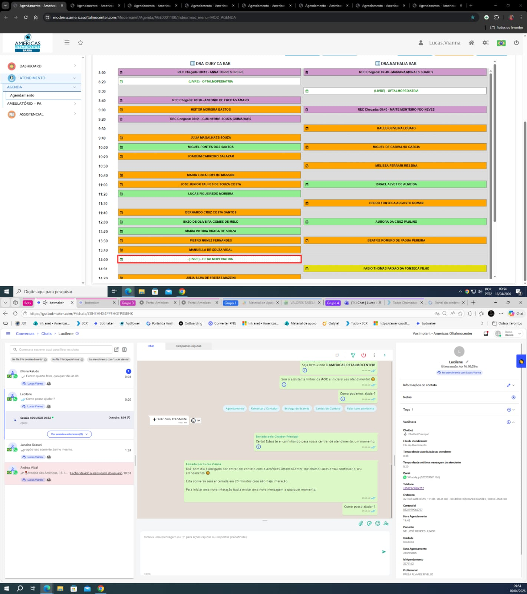
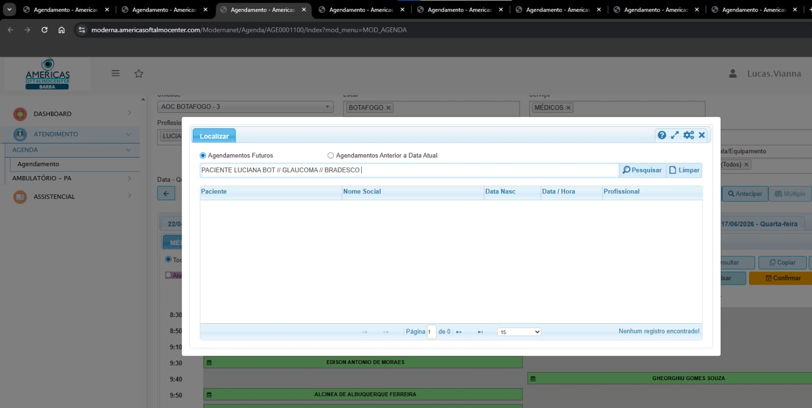

Treinamento moderno, visual e interativo
Padronizar e acelerar o atendimento com máxima eficiência e organização profissional.
Utilize dois monitores para eliminar troca de tela e ganhar velocidade.

Use o campo pesquisar para identificar rapidamente a aba correta.
Exemplo:
PACIENTE LUCIANA BOTT // GLAUCOMA // BRADESCO
